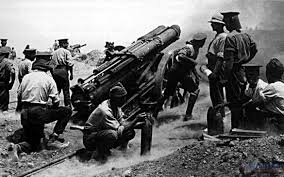
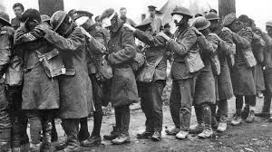

LA PRIMERA GUERRA MUNDIAL

Primera Guerra Mundial. Conflicto armado entre 1914 y 1918, y que produjo más de 10 millones de bajas. Más de 60 millones de soldados europeos fueron movilizados desde 1914 hasta 1918. Originado en Europa por la rivalidad entre las potencias imperialistas, se transformó en el primero en cubrir más de la mitad del planeta. Fue en su momento el conflicto más sangriento de la historia. Antes de la Segunda Guerra Mundial, esta guerra solía llamarse la gran guerra o la guerra de guerras.
INICIOS
La guerra comenzó como un enfrentamiento entre Austria-Hungría y Serbia. El Imperio de Rusia se unió al conflicto, pues se consideraba protectora de los países eslavos y deseaba socavar la posición de Austria-Hungría en los balcanes. Tras la declaración de guerra austrohúngara a Rusia el 1 de agosto de 1914, el conflicto se transformó en un enfrentamiento militar a escala europea. Alemania respondió a Rusia con la guerra, obligada por un pacto secreto contraído con la monarquía de los Habsburgo, y Francia se movilizó para apoyar a su aliada.
Las hostilidades involucraron a 32 países, 28 de ellos denominados «Aliados»: Francia, Gran Bretaña, Rusia, Serbia, Bélgica, Canadá, Portugal, Japón, Estados Unidos (desde 1917), así como Italia, que había abandonado la triple alianza. Este grupo se enfrentó a la coalición de las «Potencias Centrales», integrada por los imperios Austrohúngaro, Alemán y, acompañados por Bulgaria.
DETONANTE DEL CONFLICTO
El evento detonante del conflicto fue el asesinato del archiduque Francisco Fernando de Austria y su esposa, Sofía Chotek, en Sarajevo el 28 de junio de 1914 a manos del joven estudiante nacionalista serbio Gavrilo Princip, miembro del grupo serbio "Joven Bosnia", ligado al grupo nacionalista “Mano negra”, que apoyaba la unificación de Bosnia con Serbia. Francisco Fernando era el heredero de la corona austro-húngara después de la muerte de su primo, Rodolfo de Habsburgo (en 1889) y de su padre Carlos Luis de Austria (en 1896). Su asesinato precipitó la declaración de guerra de Austria contra Serbia que desencadenó la Primera Guerra Mundial.
FRENTE OCCIDENTAL

oldados franceses en las trincheras, durante la batalla de Verdún, en 1916. Artículo principal: Frente Occidental (Primera Guerra Mundial). Véase también: Guerra de trincheras. En agosto de 1914, el ejército alemán abrió el frente occidental el 4 de agosto invadiendo Bélgica y Luxemburgo, con un ataque a la ciudad de Lieja. y luego obteniendo el control militar de regiones industriales importantes del oeste de Francia, derrotando al ejército francés en la batalla de Lorena, la batalla de Charleroi (21 de agosto) y en la batalla de Maubeuge una semana más tarde. La fuerza del avance fue contenida drásticamente con la primera batalla del Marne en septiembre de 1914, donde enfrentaron al cuerpo Británico compuesto por 5 divisiones experimentadas y las tropas de reserva francesas.
Los taxis de París ayudaron a trasladar a los efectivos ingleses al frente. El equilibrio de fuerzas y las nuevas armas facilitaron la defensa frente al ataque e impusieron la estabilización del frente. Ambos contendientes se atrincheraron en una línea sinuosa de posiciones fortificadas que se extendía desde el mar del norte hasta la frontera Suiza con Francia. Esta línea permaneció sin cambios sustanciales durante casi toda la guerra. Un asalto presentaba tal desventaja frente al adversario que los ataques aliados fueron infructuosos y Alemania pudo resistir a pesar de combatir en dos frentes. En estos ataques se recurrió a bombardeos masivos de artillería y al avance masivo de la infantería.
Sin embargo, la combinación de las trincheras, los nidos de ametralladoras, el alambre de espino y la artillería infligían cuantiosas bajas a los atacantes y a los defensores en contraataque. Como resultado, no se conseguían avances significativos. Las condiciones sanitarias y humanas para los soldados eran muy crudas y las bajas elevadísimas. En otoño de 1915 el general Joseph Joffre intentó una ofensiva, con apoyo inglés, que concluyó en un gigantesco fracaso. Después de este éxito defensivo, a finales de año, el general Von Falkenhayn, jefe de estado mayor, propuso al Kaiser su proyecto de atacar Verdún. Plaza fuerte e impenetrable según la propaganda francesa, pero que estaba en posición delicada por no poseer un camino o vía férrea para su reavituallamiento.
.VOLVER A LA PAGINA PRINCIPAL